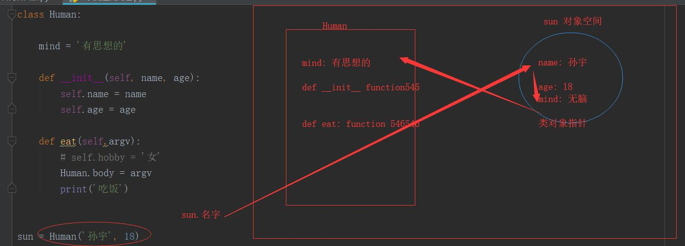
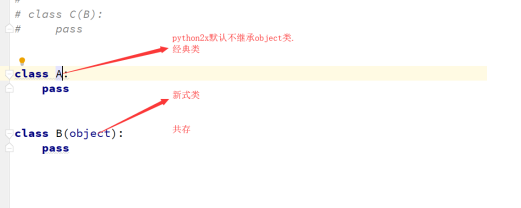
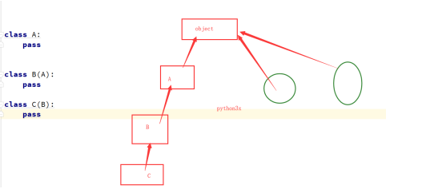
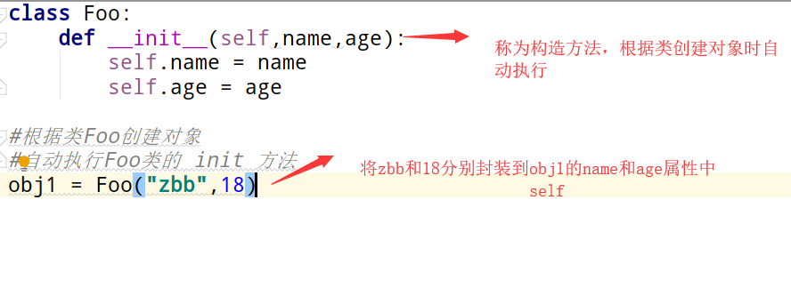
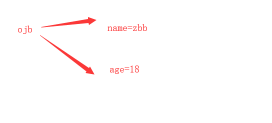

面向对象的三大特性是什么？ 抽象、继承、多态。
面向对象第一个优点:*
对相似功能的函数,同一个业务的函数进行归类,分类,使你的代码更清晰化，更合理化。
什么是面向对象。
面向对象的程序设计的核心是对象（上帝式思维），要理解对象为何物，必须把自己当成上帝，上帝眼里世间存在的万物皆为对象，不存在的也可以创造出来。
那什么是类？什么是对象？
类：就是具有相同属性和功能的一类事物。
对象：就是类的具体表现。对象一定是不一样的
面向对象的第二个优点:
面向对象，要拥有上帝的视角看问题，类其实就是一个公共模板（厂房），对象就是从具体的模板实例化出来,得对象,得一切
class Human:
"""
类的具体结构
"""
#第一部分:静态属性
mind = "思想"
language ="语言"
#第二部分:动态方法
def work(self):
print("工作")
def eat(self):
print("吃饭")class 是关键字与def用法相同，定义一个类。
Human是此类的类名，类名使用驼峰(CamelCase)命名风格，首字母大写，私有类可用一个下划线开头。
类的结构从大方向来说就分为两部分：
静态变量。
动态方法。
class Human:
"""
类的具体结构
"""
#第一部分:静态属性
mind = "思想"
language ="语言"
#第二部分:动态方法
def work(self):
print("工作")
def eat(self):
print("吃饭")print(Human.__dict__)1.增加
Human.body="有头发"
print(Human.__dict__)2.删除
del Human.mind3.改
Human.mind ="个性"
print(Human.__dict__)4.查
print(Human.language)
# print(Human.__dict__)除了两个特殊方法：静态方法，类方法之外，一般不会通过类名操作一个类中的方法.
Human.work(123)总结:一般类名
对象是从类中出来的，只要是类名加上（），这就是一个实例化过程，这个就会实例化一个对象。**
实例化一个对象总共发生了三件事：
1，在内存中开辟了一个对象空间。
2，自动执行类中的_init_方法，并将这个对象空间（内存地址）传给了__init__方法的第一个位置参数self。
3，在__init _方法中通过self给对象空间添加属性。
class Human:
"""
类的具体结构
"""
mind = "思想"
language ="语言"
def __init__(self,name,age):
# self 和 obj 指向的是同一个内存地址同一个空间，下面就是通过self给这个对象空间封装四个属性。
self.n=name
self.a=age
def work(self):
print("工作")
def eat(self):
print("吃饭")
obj=Human("zbb",18) #实例化过程
#得到一个返回值,这个返回值就是对象,实例
print(obj.n)
print(obj.a)
print(obj.__dict__)
#zbb
#{'n': 'zbb'}obj = Human('zbb',18)
print(obj.__dict__)obj = Human('zbb',18)
增:
obj.sex = 'laddy_boy'
删:
del obj.a
改:
obj.a = 1000
查:
print(obj.n)
print(obj.__dict__)obj = Human('zbb',18)
# print(obj.mind)
obj.mind = '无脑的'
print(obj.mind)
print(Human.mind)class Human:
mind = '有思想'
language = '实用语言'
def __init__(self,name,sex,age,hobby):
self.n = name
self.s = sex
self.a = age
self.h = hobby
def work(self):
print(self)
print('人类会工作')
def tools(self):
print('人类会使用工具')
obj = Human('barry','男',18,'运动')
obj.work()
obj.tools()self其实就是类中方法（函数）的第一个位置参数，只不过解释器会自动将调用这个函数的对象传给self。所以咱们把类中的方法的第一个参数约定俗成设置成self, 代表这个就是对象。一个类可以实例化多个对象
obj1= Human('小胖','男',20,'美女')
obj2= Human('相爷','男',18,'肥女')
print(obj1,obj2)
print(obj1.__dict__)
print(obj2.__dict__)class A:
def __init__(self,name):
self.name = name
def func(self,sex):
self.sex = sex# 类外面可以：
obj = A('barry')
obj.age = 18
print(obj.__dict__) # {'name': 'barry', 'age': 18}
# 类内部也可以：
obj = A('barry') # __init__方法可以。
obj.func('男') # func 方法也可以。
class A:
def __init__(self, name):
self.name = name
def func(self, sex):
self.sex = sex
def func1(self):
A.bbb = 'ccc'
# 类的外部可以添加
A.aaa = 'djb'
print(A.__dict__)
# 类的内部也可以添加。
A.func1(111)
print(A.__dict__)

对象查找属性的顺序：先从对象空间找 ------> 类空间找 ------> 父类空间找 ------->.....
类名查找属性的顺序：先从本类空间找 -------> 父类空间找--------> ........
上面的顺序都是单向不可逆，类名不可能找到对象的属性。
主从之分
依赖关系：将一个类的对象或者类名传到另一个类的方法使用。
class Boy:
def __init__(self,name,girl=None):
self.name = name
self.girl=girl
def hava_diner(self):
if self.girl:
print(f"{self.name}请{self.girl}吃饭")
else:
print("单身狗")
live=Boy("qw")
# live.hava_diner()
live.girl="zxy"
live.hava_diner()
class Boy:
def __init__(self,name,girl=None):
self.name = name
self.girl=girl
def hava_diner(self):
if self.girl:
print(f"{self.name}请{self.girl}吃饭")
else:
print("单身狗")
def girl_skill(self):
self.girl.skill()
class Girl:
def __init__(self,name):
self.name=name
def skill(self):
print(f"{self.name}能吃")
zbb=Boy("zbb")
# live.hava_diner()
zxy =Girl("zxy")
zbb.girl=zxy
zbb.girl_skill()
class Game_role:
def __init__(self,name,ad,hp):
self.name=name
self.ad=ad
self.hp=hp
def equipment(self,wea):
self.weapon =wea #组合关系
class Weapon:
def __init__(self,name,ad):
self.name = name
self.ad = ad
def weapon_attack(self,p1,p2): #依赖关系
p2.hp-=self.ad
print(f"{p1.name}利用{self.name}给了{p2.name}一枪,{p2.name}掉了{self.ad}血,还剩{p2.hp}")
gailun =Game_role("盖伦",10,100)
yasuo =Game_role("剑豪",20,80)
Sword = Weapon("大保健",16)
Musket = Weapon('菊花枪',20)
# 给游戏人物封装武器属性
gailun.equipment(Sword)
gailun.weapon.weapon_attack(gailun,yasuo)
比较官方的说法就是：
继承（英语：inheritance）是面向对象软件技术当中的一个概念。如果一个类别A“继承自”另一个类别B，就把这个A称为“B的子类别”，而把B称为“A的父类别”也可以称“B是A的超类”。继承可以使得子类别具有父类别的各种属性和方法，而不需要再次编写相同的代码。在令子类别继承父类别的同时，可以重新定义某些属性，并重写某些方法，即覆盖父类别的原有属性和方法，使其获得与父类别不同的功能。另外，为子类别追加新的属性和方法也是常见的做法。 一般静态的面向对象编程语言，继承属于静态的，意即在子类别的行为在编译期就已经决定，无法在执行期扩充
专业说法: 如果B类继承A类
B类就称为子类,派生类
A类称为父类,基类,超类
通俗一点就是 子承父业
# 继承的用法：
class Aniaml:
live = "123"
def __init__(self,name,sex,age):
self.name = name
self.age = age
self.sex = sex
class Cat(Aniaml):
pass
class Dog(Aniaml):
pass
优点: 减少重复代码 .
增加类之间的耦合度（耦合性不宜多，宜精）
在python2x版本中存在两种类.：
⼀个叫经典类. 在python2.2之前. ⼀直使⽤的是经典类. 经典类在基类的根如果什么都不写.
⼀个叫新式类. 在python2.2之后出现了新式类. 新式类的特点是基类的根是object类。
python3x版本中只有一种类：
python3中使⽤的都是新式类. 如果基类谁都不继承. 那这个类会默认继承 object
1.类名,对象执行父类的方法
class Animal:
live = "有生命"
def __init__(self,name,sex,age):
self.name =name
self.sex =sex
self.age =age
def eat(self):
print("chi")
class Human(Animal):
body = "有思想"
#类名执行父类属性的方法(不常用)
print(Human.live)
Human.eat(1213)
#子类执行父类的方法
obj = Human("zbb","男","23") #相当于实例化
print(obj.live)
2.执行顺序
p1 = Person('barry','男',18)
# 实例化对象时必须执行__init__方法,类中没有，从父类找，父类没有，从object类中找。
p1.eat()
# 先要执行自己类中的eat方法，自己类没有才能执行父类中的方法。
3.同时执行子类以及父类方法
第一种方法(不常用)
class Animal:
def eat(self):
print("chi")
class Human:
def __init__(self,name):
self.name =name
def eat(self):
print(f"{self.name}需要吃饭")
Animal.eat(self.name)
obj = Human("zbb")
obj.eat()
第二种方法
class Animal:
def eat(self):
print("chi")
class Human(Animal):
def __init__(self,name):
self.name =name
def eat(self):
print(f"{self.name}需要吃饭")
super().eat()
obj = Human("zbb")
obj.eat()super() 重构父类的方法
解决多重继承问题
不需要明确给出任何基类的名字,它会自动找到所有直接基类,及其对应的方法.用于继承.
super()的好处就是可以避免直接使用父类的名字.主要用于多重继承
在python2x版本中存在两种类.：
⼀个叫经典类. 在python2.2之前. ⼀直使⽤的是经典类. 经典类在基类的根如果什么都不写.
⼀个叫新式类. 在python2.2之后出现了新式类. 新式类的特点是基类的根是object类。
python3x版本中只有一种类：
python3中使⽤的都是新式类. 如果基类谁都不继承. 那这个类会默认继承 object1.经典类的多继承
经典类: 深度优先.从左至右,深度优先.
不继承object类

2.新式类的多继承
继承object类

class O:
name = '1'
class D(O):
pass
class E(O):
name = '2'
# pass
class F(O):
name = '3'
class B(D,E):
pass
class C(E,F):
pass
class A(B,C):
pass
obj = A()
print(obj.name)
# mro(Child(Base1，Base2)) = [ Child ] + merge( mro(Base1), mro(Base2), [ Base1, Base2] )
# mro(A(B,C)) = [A] + merge(mro(B),mro(C),[B,C])
总结:直接print 不需要什么算法
print(A.mro())
mro是继承付父类方法时的顺序表
封装，顾名思义就是将内容封装到某个地方，以后再去调用被封装在某处的内容。
所以，在使用面向对象的封装特性时，需要：

self 是一个形式参数，当执行 obj1 = Foo( ) 时，self 等于 obj1

调用被封装的内容时，有两种情况：
上图展示了对象 ojb1在内存中保存的方式，根据保存格式可以如此调用被封装的内容：对象.属性名
class Foo:
def __init__(self,name,age):
self.name = name
self.age = age
obj1 = Foo("zbb",18)
print(obj1.name) # 直接调用obj1对象的name属性
print(obj1.age) # 直接调用obj1对象的age属性
执行类中的方法时，需要通过self间接调用被封装的内容
class Foo:
def __init__(self,name,age):
self.name = name
self.age = age
def func(self):
print(self.name)
print(self.age)
obj1 = Foo("zbb",18)
obj1.func() ## Python默认会将obj1传给self参数
综上所述，对于面向对象的封装来说，其实就是使用构造方法将内容封装到 对象 中，然后通过对象直接或者self间接获取被封装的内容。
多态，同一个对象，多种形态。python默认支持多态。
鸭子类型
python中有一句谚语说的好，你看起来像鸭子，那么你就是鸭子。
对于代码上的解释其实很简答：
class A:
def f1(self):
print('in A f1')
def f2(self):
print('in A f2')
class B:
def f1(self):
print('in A f1')
def f2(self):
print('in A f2')
obj = A()
obj.f1()
obj.f2()
obj2 = B()
obj2.f1()
obj2.f2()
# A 和 B两个类完全没有耦合性，但是在某种意义上他们却统一了一个标准。
# 对相同的功能设定了相同的名字，这样方便开发，这两个方法就可以互成为鸭子类型。
# 这样的例子比比皆是：str tuple list 都有 index方法，这就是统一了规范。
# str bytes 等等 这就是互称为鸭子类型。
鸭子类型
class Payment:
def pay(self,money):
raise Exception("你的子类需要定义pay方法")
#pass
class QQpay(Payment):
def pay(self,money):
print(f"使用qq支付了{money}")
class Alipay(Payment):
def pay(self,money):
print(f"使用阿里支付了{money}")
class Wechat(Payment):
def fuqian(self,money):
print(f"使用微信支付了{money}")
def pay(obj,money): #统一接口
obj.pay(money) # 这个函数就是统一支付规则，这个叫做： 归一化设计。
obj1 = QQpay()
obj2 = Alipay()
obj3 = Wechat()
pay(obj1,100)
pay(obj2,200)
# pay(obj3,200) # 会直接找到父类 并发出错误
from abc import ABCMeta,abstractmethod
class Payment(metaclass=ABCMeta):
#抽象类 接口类 规范和约束 metaclass指定的是一个元类
@abstractmethod
def pay(self,money):
pass #抽象方法
class QQpay(Payment):
def pay(self,money):
print(f"使用qq支付了{money}")
class Alipay(Payment):
def pay(self,money):
print(f"使用阿里支付了{money}")
class Wechat(Payment):
def fuqian(self,money):
print(f"使用微信支付了{money}")
# def pay(self,money):#强制定义 不定义会报错
# pass
def pay(obj,money): #统一接口
obj.pay(money)
obj3 = Wechat() #实例化过程 就报错了
总结: 约束. 其实就是⽗类对⼦类进⾏约束. ⼦类必须要写xxx⽅法. 在python中约束的⽅式和⽅法有两种:
1. 使⽤抽象类和抽象⽅法, 由于该⽅案来源是java和c#. 所以使⽤频率还是很少的
2.使⽤⼈为抛出异常的⽅案. 并且尽量抛出的是NotImplementError. 这样比较专业, ⽽且错误比较明确.(推荐)
super是严格按照类的继承顺序执行！！！
# super可以下一个类的其他方法
# 严格按照类的mro顺序执行
class A:
def f1(self):
print('in A')
class Foo(A):
def f1(self):
super().f1()
print('in Foo')
class Bar(A):
def f1(self):
print('in Bar')
class Info(Foo,Bar):
def f1(self):
super(Foo,self).f1()
#super(Info,self).f1() #()默认是
print('in Info f1')
obj = Info()
obj.f1()
书写格式： 开头部分：\033[显示方式;前景色;背景色m + 结尾部分：\033[0m
注意：开头部分的三个参数：显示方式，前景色，背景色是可选参数，可以只写其中的某一个；另外由于表示三个参数不同含义的数值都是唯一的没有重复的，所以三个参数的书写先后顺序没有固定要求，系统都能识别；但是，建议按照默认的格式规范书写。
对于结尾部分，其实也可以省略，但是为了书写规范，建议\033[***开头，\033[0m结尾。
-------------------------------------------
-------------------------------------------
字体色 | 背景色 | 颜色描述
-------------------------------------------
30 | 40 | 黑色
31 | 41 | 红色
32 | 42 | 绿色
33 | 43 | 黃色
34 | 44 | 蓝色
35 | 45 | 紫红色
36 | 46 | 青蓝色
37 | 47 | 白色
-------------------------------------------
-------------------------------
显示方式 | 效果
-------------------------------
0 | 终端默认设置
1 | 高亮显示
4 | 使用下划线
5 | 闪烁
7 | 反白显示
8 | 不可见
-------------------------------
数值表示的参数含义：
显示方式: 0（默认值）、1（高亮）、22（非粗体）、4（下划线）、24（非下划线）、 5（闪烁）、25（非闪烁）、7（反显）、27（非反显）
前景色: 30（黑色）、31（红色）、32（绿色）、 33（黄色）、34（蓝色）、35（洋 红）、36（青色）、37（白色）
背景色: 40（黑色）、41（红色）、42（绿色）、 43（黄色）、44（蓝色）、45（洋 红）、46（青色）、47（白色）
常见开头格式：
\033[0m 默认字体正常显示，不高亮
\033[32;0m 红色字体正常显示
\033[1;32;40m 显示方式: 高亮 字体前景色：绿色 背景色：黑色
\033[0;31;46m 显示方式: 正常 字体前景色：红色 背景色：青色
举例说明：
1，
print('\033[1;35;0m字体变色，但无背景色 \033[0m') # 有高亮 或者 print('\033[1;35m字体有色，但无背景色 \033[0m')
print('\033[1;45m 字体不变色，有背景色 \033[0m') # 有高亮
print('\033[1;35;46m 字体有色，且有背景色 \033[0m') # 有高亮
print('\033[0;35;46m 字体有色，且有背景色 \033[0m') # 无高亮
class A:
company_name = 'zbb' # 静态变量(静态字段)
__iphone = '1353333xxxx' # 私有静态变量(私有静态字段)
def __init__(self,name,age): #特殊方法
self.name = name #对象属性(普通字段)
self.__age = age # 私有对象属性(私有普通字段)
def func1(self): # 普通方法
pass
def __func(self): #私有方法
print(666)
@classmethod # 类方法
def class_func(cls):
""" 定义类方法，至少有一个cls参数 """
print('类方法')
@staticmethod #静态方法
def static_func():
""" 定义静态方法 ，无默认参数"""
print('静态方法')
@property # 属性
def prop(self):
pass
对于每一个类的成员而言都有两种形式：
私有成员和公有成员的访问限制不同：
公有静态字段：类可以访问；类内部可以访问；派生类中可以访问
私有静态字段：仅类内部可以访问；
class A:
name = 'zbb'
__name = "zmn"
def func(self):
print(self.name)
print(self.__name)
obj = A()
obj.func() #内部可以访问
外部不能访问
class A:
name = 'zbb'
__name = "zmn"
def func(self):
pass
obj = A()
print(obj.name)
print(obj.__name) #报错
print(A.__name) #报错
公有普通字段：对象可以访问；类内部可以访问；派生类中可以访问
私有普通字段：仅类内部可以访问；
class A:
def __init__(self,name,pwd):
self.name = name
self.__pwd = pwd
def md5(self):
self.__pwd = self.__pwd + "123"
obj = A('zbb',"123")
print(obj.__pwd) ###报错 不能在类外部以及派生类使用
公有方法:对象可以访问；类内部可以访问；派生类中可以访问
私有方法:仅类内部可以访问；
class A:
def func(self):
self.__func()
print("1")
def __func(self):
print("2")
obj = A()
obj.func() #内部可以调用
# obj.__func() 报错
#####print(A._A__func) #(不允许!!!)
总结:
私有成员来说: 当你遇到重要的数据,功能,(只允许本类使用的一些方法,数据)设置成私有成员.
ps：非要访问私有成员的话，可以通过 对象._类__属性名,但是绝对不允许!!!*
*为什么可以通过._类__私有成员名访问呢?因为类在创建时,如果遇到了私有成员(包括私有静态字段,私有普通字段,私有方法)它会将其保存在内存时自动在前面加上_类名.*
实例方法
定义：第一个参数必须是实例对象，该参数名一般约定为“self”，通过它来传递实例的属性和方法（也可以传类的属性和方法）；
调用：只能由实例对象调用。
定义：使用装饰器@classmethod。第一个参数必须是当前类对象，该参数名一般约定为“cls”，通过它来传递类的属性和方法（不能传实例的属性和方法）；
调用：实例对象和类对象都可以调用。
类方法有什么用???
得到类名可以实例化对象.
可以操作类的属性.
class A:
def func(self):
print("实例方法")
@classmethod
def cls_func(cls):
print(f"cls{cls}") #cls类名
obj = cls()
print(obj) #打印A的内存地址
print("类方法")
A.cls_func()
#obj = A()
#obj.cls_func()
# 类方法: 一般就是通过类名去调用的方法,并且自动将类名地址传给cls,
# 但是如果通过对象调用也可以,但是传的地址还是类名地址.
例题
创建学生类,只要实例化一个对象,写一个类方法,统计一下具体实例化多少个学生?
class Student:
count = 0
def __init__(self,name,id):
self.name = name
self.id = id
Student.addnum()
@classmethod
def addnum(cls):
cls.count = cls.count + 1
@classmethod
def getnum(cls):
return cls.count
obj1 = Student('zbb', 12343243243) #
obj1 = Student('zbb', 12343243243) #
print(Student.getnum())
使用装饰器@staticmethod。
调用：实例对象和类对象都可以调用。
# # 静态方法是不依赖于对象与类的,其实静态方法就是函数.
# 保证代码的规范性,合理的划分.后续维护性高.
#和在外面没有区别
import time
class TimeTest(object):
area = '中国'
def __init__(self, hour, minute, second):
self.hour = hour
self.minute = minute
self.second = second
def change_time(self):
print(f'你想调整的时间: {self.hour}时{self.minute}分{self.second}秒')
@staticmethod
def showTime():
return time.strftime("%H:%M:%S", time.localtime())
def showTime():
return time.strftime("%H:%M:%S", time.localtime())
def time1():
pass
def time2():
pass
# t = TimeTest(2, 10, 10)
# # t.change_time()
# print(TimeTest.showTime())
property是一种特殊的属性，访问它时会执行一段功能（函数）然后返回值
将动态方法 伪装 成了一个属性,虽然在代码级别上没有什么提升,但是让你看起来更合理
例一：BMI指数（bmi是计算而来的，但很明显它听起来像是一个属性而非方法，如果我们将其做成一个属性，更便于理解）
成人的BMI数值：
过轻：低于18.5
正常：18.5-23.9
过重：24-27
肥胖：28-32
非常肥胖, 高于32
体质指数（BMI）=体重（kg）÷身高^2（m）
EX：70kg÷（1.75×1.75）=22.86
class Bmi:
def __init__(self,name,height,weight):
self.name = name
self.height = height
self.weight = weight
def bmi(self):
return self.weight/self.height**2
obj = Bmi('赵嘎', 1.83, 65)
print(obj.bmi())
结果虽然实现了,但是逻辑上感觉不合理.bmi应该是类似于name,age,height,等名词,
但是你把它当做方法使用了.
class Bmi:
def __init__(self,name,height,weight):
self.name = name
self.height = height
self.weight = weight
@property
def bmi(self):
return self.weight/self.height**2
obj = Bmi('赵嘎', 1.83, 65)
# print(obj.bmi)
# property 将执行一个函数需要函数名()变换成直接函数名.
# 将动态方法 伪装 成了一个属性,虽然在代码级别上没有什么提升,但是让你看起来更合理.
由于新式类中具有三种访问方式，我们可以根据他们几个属性的访问特点，分别将三个方法定义为对同一个属性：获取、修改、删除
class Foo:
@property
def AAA(self):
print('get的时候运行我啊')
@AAA.setter
def AAA(self,value):
print('set的时候运行我啊')
@AAA.deleter
def AAA(self):
print('delete的时候运行我啊')
#只有在属性AAA定义property后才能定义AAA.setter,AAA.deleter
f1=Foo()
f1.AAA
f1.AAA='aaa'
del f1.AAA
# get的时候运行我啊
# set的时候运行我啊
# delete的时候运行我啊
class Foo:
def get_AAA(self):
print('get的时候运行我啊')
def set_AAA(self,value):
print('set的时候运行我啊')
def delete_AAA(self):
print('delete的时候运行我啊')
AAA=property(get_AAA,set_AAA,delete_AAA) #内置property三个参数与get,set,delete一一对应
f1=Foo()
f1.AAA
f1.AAA='aaa'
del f1.AAA
使用场景
class Goods(object):
def __init__(self):
# 原价
self.original_price = 100
# 折扣
self.discount = 0.8
@property
def price(self):
# 实际价格 = 原价 * 折扣
new_price = self.original_price * self.discount
return new_price
@price.setter
def price(self, value):
self.original_price = value
@price.deltter
def price(self, value):
del self.original_price
obj = Goods()
obj.price # 获取商品价格
obj.price = 200 # 修改商品原价
del obj.price # 删除商品原价
商品实例
商品示例
isinstance(a,b)：判断a是否是b类（或者b类的派生类）实例化的对象
class A:
pass
class B(A):
pass
obj = B()
print(isinstance(obj,B))
print(isinstance(obj,A))
isinstance
isinstace(a,b) 判断的是 a类是否是b类 子孙类.**
issubclass(a,b)： 判断a类是否是b类（或者b的派生类）的派生类
class A:
pass
class B(A):
pass
class C(B):
pass
print(issubclass(B,A))
print(issubclass(C,A))
issubclass
思考：那么 list str tuple dict等这些类与 Iterble类 的关系是什么？
from collections import Iterable
print(isinstance([1,2,3], list)) # True
print(isinstance([1,2,3], Iterable)) # True
print(issubclass(list,Iterable)) # True
# 由上面的例子可得，这些可迭代的数据类型，list str tuple dict等 都是 Iterable的子类。
type元类是获取该对象从属于的类,而type类比较特殊，Python原则是：一切皆对象，其实类也可以理解为'对象',而type元类又称作构建类，
python中大多数内置的类（包括object）以及自己定义的类，都是由type元类创造的。
print(type('abc'))
print(type(True))
print(type(100))
print(type([1, 2, 3]))
print(type({'name': 'zbb'}))
print(type((1,2,3)))
print(type(object))
class A:
pass
print(isinstance(object,type))
print(isinstance(A, type))
type 与 object 的关系.
print(type(object)) object类是type类的一个实例.
object类是type类的父类.
print(issubclass(type,object))
程序可以访问、检测和修改它本身状态或行为的一种能力（自省）。
python面向对象中的反射：
通过字符串的形式操作对象相关的属性。
python中的一切事物都是对象（都可以使用反射）
四个可以实现自省的函数
下列方法适用于类和对象（一切皆对象，类本身也是一个对象）
对对象的反射
class Foo:
f="类的静态变量"
def __init__(self,name,age):
self.name = name
self.age = age
def say_hi(self):
print(f"hello {self.name}")
#实例化对象
obj = Foo("zbb",23)
#检测是否含有某属性
print(hasattr(obj,"name"))
print(hasattr(obj,"say_hi"))
# 获得属性(可以获得是字符串)
n = getattr(obj,"name")
# print(obj.name)
print(n)
func=getattr(obj,'say_hi')
# obj.say_hi()
func()
# print(getattr(obj,'aaaaaaaa')) #报错
print(getattr(obj,'aaaaaaaa','不存在啊')) #报错内容自己定义
# 设置属性
setattr(obj,'sb',True)
setattr(obj,'show_name',lambda self:self.name+'nb')
print(obj.__dict__)
print(obj.show_name(obj))
#删除属性
delattr(obj,'age')
delattr(obj,'show_name')
# delattr(obj,'show_name111')#不存在,则报错
print(obj.__dict__)
对类的反射
class A:
country = "中国"
def __init__(self,name,age):
self.name = name
self.age =age
def func(self):
print(self)
print("in A")
if hasattr(A,"country"):
print(getattr(A,"country"))
if hasattr(A,"func"):
obj = A("zbb","18")
getattr(obj,"func")()
当前模块的反射
import sys
def s1():
print('s1')
def s2():
print('s2')
this_module = sys.modules[__name__] #本模块这个对象
hasattr(this_module, 's1')
getattr(this_module, 's2')
在当前模块中一次性执行4个函数
def func1():
print('in func1')
def func2():
print('in func2')
def func3():
print('in func3')
def func4():
print('in func4')
import sys
func_lst = [f'func{i}' for i in range(1,5)]
# print(func_lst)
for func in func_lst:
getattr(sys.modules[__name__],func)()
对其他模块的反射
#一个模块中的代码
def test():
print('from the test')
# 另一个模块中的代码
import module_test as obj
#obj.test()
print(hasattr(obj,'test'))
getattr(obj,'test')()
反射的应用：
了解了反射的四个函数。那么反射到底有什么用呢？它的应用场景是什么呢？
现在让我们打开浏览器，访问一个网站，你单击登录就跳转到登录界面，你单击注册就跳转到注册界面，等等，其实你单击的其实是一个个的链接，每一个链接都会有一个函数或者方法来处理
class User:
user_list = [('login','登录'),('register','注册'),('save', '存储')]
def login(self):
print('欢迎来到登录页面')
def register(self):
print('欢迎来到注册页面')
def save(self):
print('欢迎来到存储页面')
while 1:
choose = input('请输入序号: \n1: 登录\n2: 注册\n3: 存储\n').strip() # 1
obj = User()
getattr(obj, obj.user_list[int(choose)-1][0])() # getattr(obj,'login')
def func():
pass
class A:
def func(selfs):
pass
print(func)
print(A.func)#通过类名调用的类中的实例方法叫函数
<function func at 0x00000252B19DC2F0>
<function A.func at 0x00000252B1B997B8>
obj= A()
print(obj.func)#通过对象调用的类中的实例方法叫方法.
from types import FunctionType
from types import MethodType
def func():
pass
class A:
def func(self):
pass
obj = A()
print(isinstance(func,FunctionType)) # True
print(isinstance(A.func,FunctionType)) # True
print(isinstance(obj.func,FunctionType)) # False
print(isinstance(obj.func,MethodType)) # True
总结:
python 中一切皆对象, 类在某种意义上也是一个对象,python中自己定义的类,
以及大部分内置类,都是由type元类(构建类)实例化得来的.
python 中一切皆对象, 函数在某种意义上也是一个对象,函数这个对象是从FunctionType这个类实例化出来的.
python 中一切皆对象, 方法在某种意义上也是一个对象,方法这个对象是从MethodType这个类实例化出来的.
那么，函数和方法除了上述的不同之处，我们还总结了一下几点区别。
（1）函数的是显式传参的。
（2）函数则跟对象无关。
（3）方法中的数据则是隐形传参.
（4）方法可以操作类内部的数据。
（5）方法跟对象是关联的。如我们在用strip()方法是，是不是都是要通过str对象调用，比如我们有字符串s,然后s.strip()这样调用。是的，strip()方法属于str对象。
我们或许在日常中会口语化称呼函数和方法时不严谨，但是我们心中要知道二者之间的区别。
在其他语言中，如Java中只有方法，C中只有函数，C++么，则取决于是否在类中。
定义：双下方法是特殊方法
双下方法主要是python源码程序员使用的，
我们在开发中尽量不要使用双下方法，但是深入研究双下方法，更有益于我们阅读源码。
调用：不同的双下方法有不同的触发方式，就好比盗墓时触发的机关一样，不知不觉就触发了双下方法，例如：__init_
class B:
def __init__(self,name,age):
self.name = name
def __len__(self):
print(self.__dict__)
return len(self.__dict__) #必须要加
b = B("zbb",28)
print(len(b)) #len()触发调用
class A:
pass
obj = A()
print(hash(obj))
print(hash('fdsaf')) # hash()触发调用
如果一个类中定义了__str__方法，那么在打印 对象 时，默认输出该方法的返回值。
class A:
def __init__(self,name,age):
self.name = name
self.age =age
def __str__(self):
print(666)
return f'姓名: {self.name} 年龄: {self.age}'
a = A("zbb",18)
print(f'{a.name},{a.age}') #打印对象名触发__str__方法
print(str(a)) #直接str转化也可以触发.
如果一个类中定义了__repr__方法，那么在repr(对象) 时，默认输出该方法的返回值。
print('我叫%s' % ('zbb'))
print('我叫%r' % ('zbb')) #保留括号里的原来的样子
print(repr('fdsaf'))
# 我叫zbb
# 我叫'zbb'
# 'fdsaf'
class A:
def __init__(self,name,age):
self.name = name
self.age =age
def __repr__(self):
print(666)
return f'姓名: {self.name} 年龄: {self.age}'
a = A('zbb',18)
# print(a)
print(repr(a)) #print(repr(对象名)) 触发
class Foo:
def __init__(self):
pass
def __call__(self, *args, **kwargs):
print('__call__')
obj = Foo()
obj() # 对象名() 或者 类名()() 触发
# Foo()()
class A:
def __init__(self):
self.a = 1
self.b = 2
def __eq__(self,obj):
# if self.a == obj.a and self.b == obj.b:
# return True
return True
x = A()
y = A()
print(x == y) # 对象名 == 对象名 会触发
节省内存
class A:
def __del__(self):
print(666)
obj = A()
del obj
# del 变量名 或者 类 或者 方法名时会执行
#不需要去程序员去关心，垃圾处理机制帮助处理
class A:
def __init__(self):
self.x = 1
print('in init function')
def __new__(cls, *args, **kwargs):
print('in new function')
return object.__new__(A) # object 342534
a = A()
# 1. 先触发 object的__new__方法,此方法在内存中开辟一个对象空间.
# 2. 执行__init__方法,给对象封装属性.
# python中的设计模式: 单例模式
# 一个类只允许实例化一个对象.
class A:
pass
obj = A()
print(obj)
obj1 = A()
print(obj1)
obj2 = A()
print(obj2) #地址都不同
手写单例模式
方便对实例个数的控制并节约系统资源
class A:
__msg = None # 用来记录对象信息
def __init__(self,name):
self.name = name
def __new__(cls, *args, **kwargs):
if not cls.__msg: # 当 __msg 为 None 时，证明是第一次创建对象空间
# cls.__msg = super().__new__(cls) # 调用父类的__new__方法。 记得参数为 cls(类本身)
cls.__msg = object.__new__(cls)
return cls.__msg # 将对象空间返回
a = A("zbb")
a1 = A("zxy")
print(a.name)
print(a1.name) # 两个地址相同
# __item__系列
# __getitem__ __setitem__ __delitem__ 对对象做类似于字典的(增删改查)触发__item__系列
# __delattr__ del obj.属性 就会触发此方法
class Foo:
def __init__(self,name):
self.name=name
def __getitem__(self, item):
print(self.__dict__[item])
def __setitem__(self, key, value):
self.__dict__[key]=value
def __delitem__(self, key):
print('del obj[key]时,我执行')
self.__dict__.pop(key)
def __delattr__(self, item):
print('del obj.key时,我执行')
self.__dict__.pop(item)
f1=Foo('sb')
f1['age']=18
f1['age1']=19
del f1.age1
del f1['age']
f1['name']='alex'
print(f1.__dict__)
上下文管理
# 实例化对象的第二种方式: 必须基于 __enter__ 以及 __exit__这个两个方法.
class A:
def __init__(self, text):
self.text = text
def __enter__(self): # 开启上下文管理器对象时触发此方法
self.text = self.text + '您来啦' # 第一步
print(11111)
return self # 必须!!!将实例化的对象返回f1
def __exit__(self, exc_type, exc_val, exc_tb): # 执行完上下文管理器对象f1时触发此方法
print(333) # 第三步
self.text = self.text + ',这就走啦'
with A('大爷') as f1:
print(2222)
print(f1.text) # 第二步
print(f1.text) # 第四步
class A:
def __init__(self,name):
self.name = name
def __iter__(self):
for i in range(10):
yield i
obj = A('zbb') # obj 一个可迭代对象
# print('__iter__' in dir(obj))
for i in obj:
print(i)
class A:
def __init__(self,name):
self.name = name
def __iter__(self):
for i in range(10):
yield i
obj = A('zbb') # obj 一个可迭代对象
o = iter(obj)
print(next(o))
print(next(o))
print(next(o))